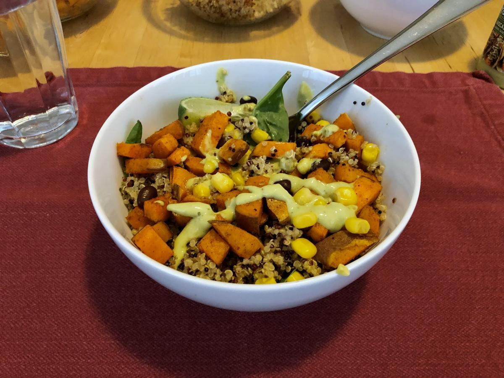

Based on https://www.spoonfulofflavor.com/sweet-potato-black-bean-quinoa-bowls/
Personal rating: 4 / 5

1 large sweet potato, peel and diced
1 tsp extra virgin olive oil
1/2 tsp chili powder
1/4 tsp cumin
1/4 tsp kosher salt
1/4 cup plain non fat Greek yogurt
1/4 cup cilantro, chopped
1/4 tsp agave nectar or honey
Juice of half a lime
Pinch of salt, garlic powder, and chili powder
1.5 cup red quinoa
3 cups water
1 tsp kosher salt, divided
1 tsp chili powder
1 tsp cumin
1/2 tsp garlic powder
Juice of half a lime
3 Tbsp cilantro, chopped
1 cup black beans, rinsed and drained
Cilantro for garnishing